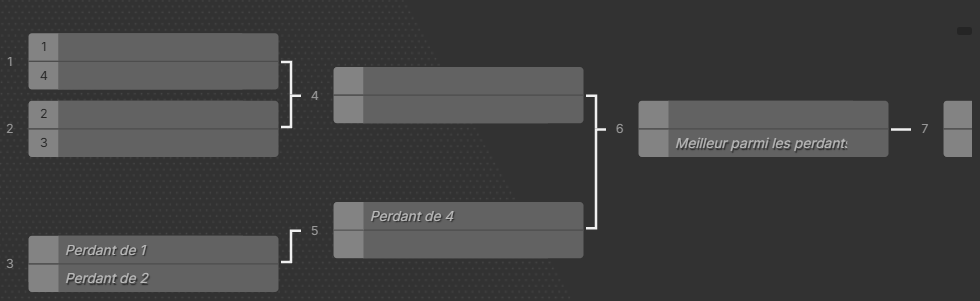

Le tournoi de League of Legends du Poly Gaming Day se déroule en deux phases distinctes. Une première phase de qualification en ligne, puis une journée de tournoi en présentiel. Les règles du règlement général s’appliquent au tournoi. Un non-respect du règlement du tournoi pourra entraîner
une disqualification de l'équipe. Les billets achetés vous donnent accès à l'événement.
Phase de poule
La phase qualificative se déroulera le samedi 14 mars et le dimanche 15 mars en distanciel. Les matchs seront annoncés dans un canal Discord dédié et se déroulent sous forme de Système Suisse à huit (8)
équipes. Les quatre meilleures équipes à l’issue de cette phase préliminaire se qualifient pour le tournoi en présentiel le samedi 21 mars.
Cette phase se joue en deux manches gagnantes (BO3). Le tournoi adopte un système de rencontres équilibrées : chaque équipe affronte des adversaires affichant un bilan identique. La qualification pour la phase suivante est acquise dès l’obtention de deux victoires, tandis que deux défaites entraînent l'élimination immédiate de la
compétition.
Pour chaque match, des codes de tournoi seront fournis sur Discord. Si un joueur a un problème pour se connecter, merci de suivre ce tuto de OUAT TV ou de contacter un organisateur.
Phase finale
La phase finale se déroulera le samedi 21 mars en présentiel pour plus de détails merci de vous référer au planning des tournois. Les matchs se dérouleront sous forme d’arbre de tournoi à double élimination en BO3 présenté comme ci-dessous

Les matchs se déroulent en Fearless c'est-à-dire qu’un champion joué lors du BO3 ne pourra pas être rejoué. La liste d’indisponibilité est réinitialisée après la fin du BO3. Pour chaque match, des codes de tournoi seront fournis sur Discord. Si un joueur a un problème pour se connecter, merci de suivre ce
tuto de OUAT TV ou de contacter un organisateur.